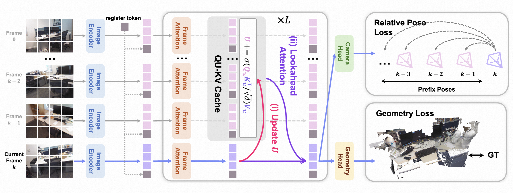

|
Jincheng Xiong (熊锦程) I am a master's student in Computer Science and Technology at the State Key Laboratory of CAD&CG, Zhejiang University, advised by Prof. Weiwei Xu. My research focuses on geometric reconstruction. I am also an algorithm intern at Alibaba Amap CV Lab, where I work on world-oriented reconstruction and generative foundation models. I received my Bachelor's degree in Computer Science and Technology from the School of Computer Science, Wuhan University, ranking first in my major (1/198). Since my freshman year, I have conducted research at the CAPTAIN Lab, advised by Prof. Gui-Song Xia, focusing on cross-view generative models. 我目前是浙江大学CAD&CG 全国重点实验室 计算机科学与技术专业硕士研究生，导师为 许威威教授， 主要研究方向为几何重建。 同时，我在阿里巴巴-高德视觉技术中心担任算法实习生，研究面向世界的重建与生成基础模型。 我本科毕业于武汉大学计算机学院 计算机科学与技术专业，并以专业第一（1/198）的成绩保送至浙江大学。 自大一开始，我在CAPTAIN Lab开展实习研究，导师为 夏桂松教授， 研究方向为跨视图生成模型。 |

|
News2026-09Our Stable3R is accepted by NeurIPS 2026 🎉! 2026-08Tech Report ABot-Recon is released 2026-06Tech Report ABot-Earth 0.5 is released 2025-06Our NeST-Splatting is accepted by ICCV 2025 🎉! 2024-06I graduated from the School of Computer Science at Wuhan University. 2023-10I am admitted to the College of Computer Science and Technology at Zhejiang University. 2023-07Our Sat2Density is accepted by ICCV 2023 🎉! |
ResearchMy current research interests revolve around the intersection of computer graphics, computer vision, spatial intelligence and generative AI. |
|
 |
Stable3R: Streaming 3D Reconstruction with Stable Geometric References
Jincheng Xiong, Jiarong Han, Hang Zhang, Mu Xu, Ming Qian NeurIPS, 2026 project page / arXiv |
|
Revisiting Local Context for Long-Horizon Streaming 3D Reconstruction
Jiarong Han, Jincheng Xiong, Yuzhou Liu, Linzhe Shi, Changjie Wu, Ning Guo, Mu Xu, Hang Zhang, Ming Qian Tech Report, 2026 project page / arXiv |
|
|
GS-Voxel: Fitting-Free Structured Latents for Large-Scale 3DGS Generation
Ming Qian, Zijian Wang, Minchao Sun, Jincheng Xiong, Hang Zhang, Mu Xu, Chi Wang, Baoquan Chen Arxiv, 2026 project page / arXiv |
|
|
ABot-Earth 0.5: Generative 3D Earth Model
Ming Qian, Tianjian Ouyang, Mingchao Sun, Zijian Wang, Jincheng Xiong, Jiarong Han, Yongchang Zhang, Jiawei Zhang, Xu Wang, Yu Liu, Luyang Tang, Fei Yu, Zengye Ge, Mengmeng Du, Yuan Liu, Nianfei Fan, Song Wang, Yingliang Peng, Chunxue Jia, Yang Liu, Shiying Zeng, Haozhe Shi, Junnan Lai, Hongyu Pan, Zheng Wu, Mu Xu, Hang Zhang Tech Report, 2026 project page / arXiv |
|
|
Neural Shell Texture Splatting: More Details and Fewer Primitives
Xin Zhang, Anpei Chen, Jincheng Xiong, Pinxuan Dai, Yujun Shen, Weiwei Xu, ICCV, 2025 project page / arXiv |
|
|
Sat2Density: Faithful Density Learning from Satellite-Ground Image Pairs
Ming Qian, Jincheng Xiong, Gui-Song Xia, Nan Xue, ICCV, 2023 project page / arXiv |
Honors
|
|
The page template is referenced from Jon Barron's website. Last update: 2026.09.28 |